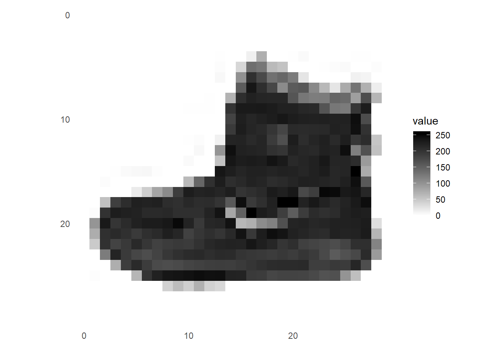
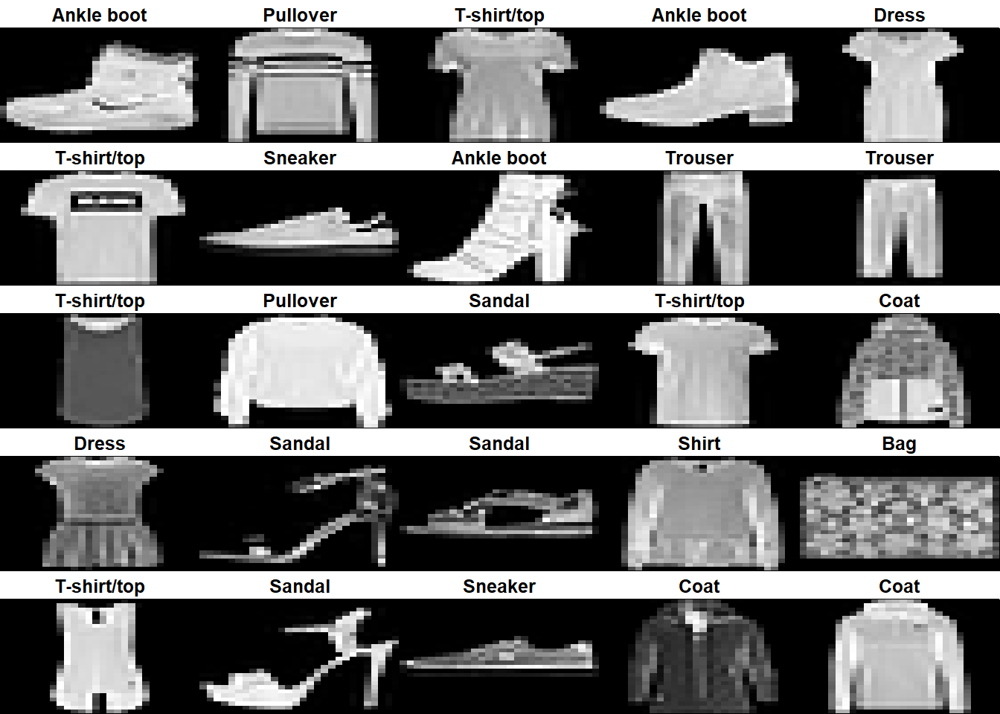
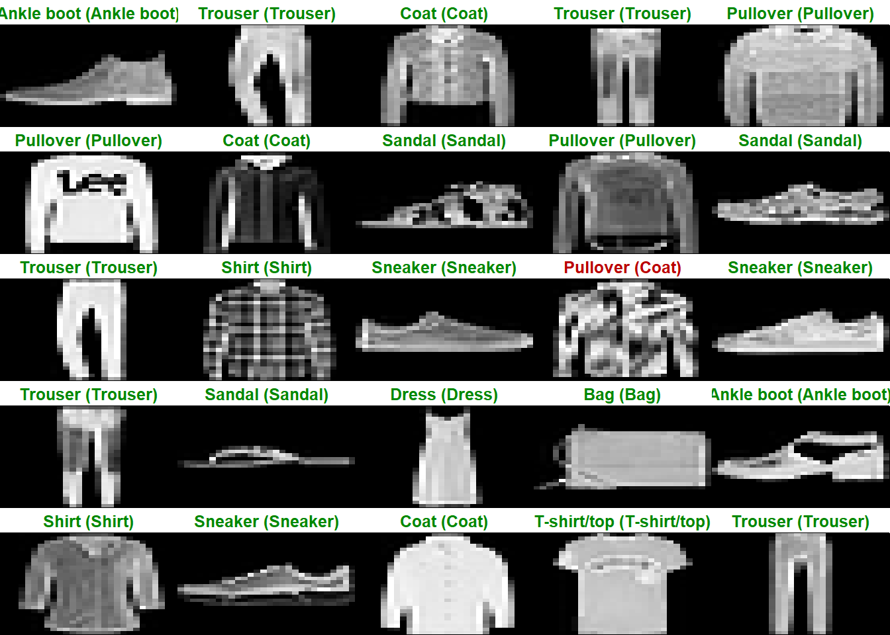

##
## Installation complete.fashion_mnist <- dataset_fashion_mnist()
c(train_images, train_labels) %<-% fashion_mnist$train
c(test_images, test_labels) %<-% fashion_mnist$test
#store classes of image as vecotr for later
class_names = c('T-shirt/top',
'Trouser',
'Pullover',
'Dress',
'Coat',
'Sandal',
'Shirt',
'Sneaker',
'Bag',
'Ankle boot')## [1] 60000 28 28## [1] 60000## [1] 9 0 0 3 0 2 7 2 5 5 0 9 5 5 7 9 1 0 6 4#each label is an intger between 0 an9 which corresponds to one of out types of clothing
dim(test_images)## [1] 10000 28 28## [1] 10000library(tidyr)
library(ggplot2)
image_1 <- as.data.frame(train_images[1, , ])
colnames(image_1) <- seq_len(ncol(image_1))
image_1$y <- seq_len(nrow(image_1))
image_1 <- gather(image_1, "x", "value", -y)
image_1$x <- as.integer(image_1$x)
ggplot(image_1, aes(x = x, y = y, fill = value)) +
geom_tile() +
scale_fill_gradient(low = "white", high = "black", na.value = NA) +
scale_y_reverse() +
theme_minimal() +
theme(panel.grid = element_blank()) +
theme(aspect.ratio = 1) +
xlab("") +
ylab("")
train_images <- train_images / 255
test_images <- test_images / 255
par(mfcol=c(5,5))
par(mar=c(0, 0, 1.5, 0), xaxs='i', yaxs='i')
for (i in 1:25) {
img <- train_images[i, , ]
img <- t(apply(img, 2, rev))
image(1:28, 1:28, img, col = gray((0:255)/255), xaxt = 'n', yaxt = 'n',
main = paste(class_names[train_labels[i] + 1]))
}
#start building the model layers
#the first layer reformats our 2d 28 by 28 to a single row of 728
#the next two layers are dense layers, the first one contaisn 128 nodes or neurons, and the soft max layer contains provides 10 probability scores with add to 1, this is the oprobablyility of each image belonging to each of our categories
model <- keras_model_sequential()
model %>%
layer_flatten(input_shape = c(28, 28)) %>%
layer_dense(units = 128, activation = 'relu') %>%
layer_dense(units = 10, activation = 'softmax')
#Loss function — This measures how accurate the model is during training. We want to minimize this function to “steer” the model in the right direction.
#Optimizer — This is how the model is updated based on the data it sees and its loss function.
#Metrics —Used to monitor the training and testing steps. The following example uses accuracy, the fraction of the images that are correctly classified.
model %>% compile(
optimizer = 'adam',
loss = 'sparse_categorical_crossentropy',
metrics = c('accuracy')
)#now use the traing data to train the model to associate images with labels
model %>% fit(train_images, train_labels, epochs = 5)
#it reaches an accuracy of about 82% in this case#now test model
score <- model %>% evaluate(test_images, test_labels)
cat('Test loss:', score$loss, "\n")## Test loss: 0.3754434## Test accuracy: 0.8665#The miodel can now be used to make predicitons baout images
predictions <- model %>% predict(test_images)
#the probability is returned with 10 liklihoods
predictions[1, ]## [1] 1.931461e-05 7.999764e-08 1.313192e-07 7.733890e-08 3.719381e-06
## [6] 4.519831e-02 8.353650e-06 9.190571e-02 3.250434e-05 8.628318e-01## [1] 10## [1] 9 2 1 1 6 1 4 6 5 7 4 5 7 3 4 1 2 2 8 0## [1] 9par(mfcol=c(5,5))
par(mar=c(0, 0, 1.5, 0), xaxs='i', yaxs='i')
for (i in 1:25) {
img <- test_images[i, , ]
img <- t(apply(img, 2, rev))
# subtract 1 as labels go from 0 to 9
predicted_label <- which.max(predictions[i, ]) - 1
true_label <- test_labels[i]
if (predicted_label == true_label) {
color <- '#008800'
} else {
color <- '#bb0000'
}
image(1:28, 1:28, img, col = gray((0:255)/255), xaxt = 'n', yaxt = 'n',
main = paste0(class_names[predicted_label + 1], " (",
class_names[true_label + 1], ")"),
col.main = color)
}
# Grab an image from the test dataset
# take care to keep the batch dimension, as this is expected by the model
img <- test_images[1, , , drop = FALSE]
dim(img)## [1] 1 28 28## [,1] [,2] [,3] [,4] [,5]
## [1,] 1.931464e-05 7.999761e-08 1.313197e-07 7.733902e-08 3.719387e-06
## [,6] [,7] [,8] [,9] [,10]
## [1,] 0.0451984 8.353654e-06 0.09190585 3.250433e-05 0.8628315## [1] 10## [1] 9